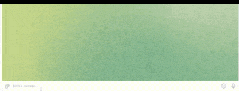
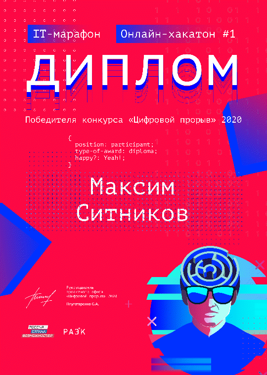
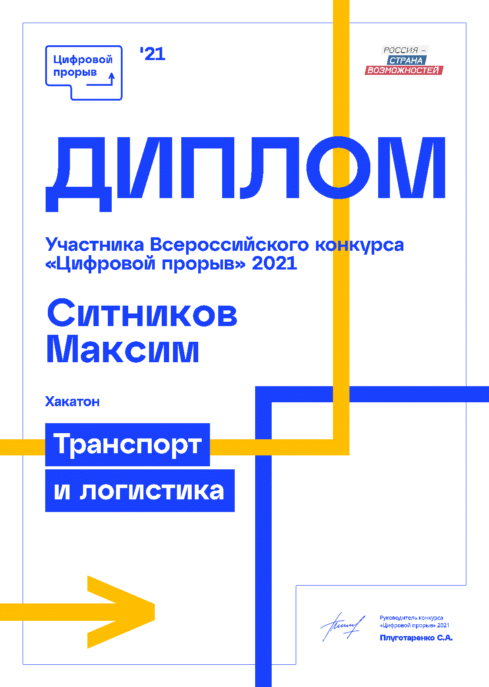

Fullstack-разработчик и DevOps инженер
Меня зовут Максим Ситников — я fullstack-разработчик и DevOps-инженер из Москвы. В работе использую .NET Core, Python, SQL, Kubernetes, CI/CD, а также RabbitMQ, WebSockets и Node.js. Люблю автоматизировать процессы и делиться опытом на GitHub и Хабре.
Среди моих проектов — сервис для подачи заявлений через API Госуслуг, инструменты обработки изображений и библиотеки для работы с криптографией. Разрабатываю серверные, веб- и десктопные приложения и веду их от идеи до деплоя.
Стараюсь писать чистый и проверяемый код, строю надёжные пайплайны и верю в силу автоматизации. В свободное время участвую в хакатонах, решаю задачи на Codewars и воспитываю детей — это помогает смотреть на задачи под другим углом.
Больше примеров кода можно найти на GitHub, а статьи — на Хабре. Всегда открыт к новым идеям и сотрудничеству.
Опыт создания сервиса для подачи заявлений через API Госуслуг.
Улучшение качества изображений для последующего анализа и обработки.
Интеграция с тестовой средой «Госуслуг» и уязвимость в разделе «Платежи».
WorkingCalendar и сайт workingcalendar.ru — автоматизация производственного календаря в БД.
Рабочий Календарь в Microsoft SQL Server, MySQL, PostgreSQL.
Система взаимодействия с API Госуслуг (ЕПГУ): автоматизация подачи заявлений и обработки результатов.
Удаление дымки (dark channel, трансмиссия, адаптивный свет). Приложение на C#.
Перевод текста в азбуку Морзе и обратно. Алгоритмические задачи на C#.
Учёт калорий и планирование меню на Xamarin.

Телеграм-бот с календарем на InlineKeyboardButton для управления задачами.
Разработка и поддержка AntiFraud-системы для телеком-направления Сбера.
LegalTech-платформа: консалтинг, управленческий учёт, интеграции с гос. сервисами.
LegalTech: автоматизация документооборота и юридической работы.
Заказная разработка: веб-приложения, прототипирование, работа с клиентами.


Пишу бэкенды и утилиты, использую async/await и lock, Interlocked, Mutex, Monitor, Semaphore, ConcurrentDictionary, Span<T>, LINQ, профилирую память и аллокации.
Проектирование схем, T-SQL, оптимизация планов, индексация, аналитические запросы.
CLI/скрипты для CI/CD, интеграции (REST/WebSocket), простые Flask-сервисы.
TypeScript для фронта и tooling, взаимодействие с REST, настройка сборки, тестирование, публикация и хранение в частном регистре.
Семантическая разметка, сетки, адаптив и микроанимации, поддержка тёмной темы.
Микросервисы, конфигурация, логирование, тестирование, контейнеризация.
Проектирование REST, авторизация, версионирование, генерация клиентов по OpenAPI.
Поддержка существующих систем, миграции на .NET Core, оптимизация производительности.
Компоненты, состояние, JS interop, публикация, интеграция с API и SignalR.
Code First, миграции, трекинг/NoTracking, оптимизация LINQ, профилирование запросов, конкарренси.
Высокопроизводительный доступ к данным, ручные маппинги, мультимаппинг, сплит на чтение/запись.
Контракты, стримы, межсервисное взаимодействие, балансировка/ретраи.
Хабы, группы, масштабирование через backplane, авторизация.
Поддержка сервисов, миграционные пути, совместимость контрактов.
React + TypeScript, компоненты, маршрутизация, взаимодействие с API.
Правки компонент, интеграция с REST, миграции версий по необходимости.
Мобильные и десктоп‑приложения на Xamarin.Forms и .NET MAUI.
YAML-пайплайны, кэш/артефакты, окружения, агенты, деплой Helm-чартов из CI.
Создание и поддержка пайплайнов в TFS 2018, шаблоны release, пулы Azure DevOps агентов.
CI для различных проектов, качество сборок, интеграция с Docker Registry.
PR-процессы, rebase/merge, политики веток и проверки в CI.
Provisioning, idempotency, роли, инвентори, секреты (vault), раскатка конфигураций.
Конфигурация билдов, артефакты, параметры, интеграция с VCS/Issue-трекерами.
Конфигурация агентов Windows/Linux, маркеры, параллельные сборки, безопасность секретов, YAML-пайплайны.
Проекты, окружения, переменные, Runbooks, интеграция с CI-серверами, Tenants.
Workflows, matrix builds, reusable actions, secrets, деплой на GitHub Pages и Docker Registry.
Dockerfile, multi-stage сборки, docker-compose, частные реестры образов.
Многоконтейнерные среды, сети, volumes, override-файлы, профили для dev/test/prod.
Deployment/StatefulSet, ConfigMap/Secret, HPA, сервисы, мониторинг кластера.
Собственные чарты, values, репозитории, деплой через GitLab CI.
Ingress-ресурсы, аннотации, cert-manager, балансировка и безопасность.
Создание и публикация NuGet-пакетов, работа с .nuspec, частные фиды.
Настройка и использование Verdaccio для кэширования npm-пакетов и приватных модулей.
Хранение и управление Docker-образами, сканирование уязвимостей, репликация между площадками.
Нормализация, индексы (btree/gin), EXPLAIN/ANALYZE, миграции.
Хранимые процедуры, триггеры, индексы, SSRS/SSAS для отчётности/OLAP.
Схемы коллекций, агрегирующие пайплайны, индексы, резервное копирование.
Cypher-запросы, графовые отношения, оптимизация под отчётность/затраты.
Кэширование данных, распределённые блокировки, Pub/Sub, Streams, Sentinel/Cluster.
Индексы, маппинги, агрегации, Kibana-дашборды, ELK-стек для логирования.
Моделирование кубов, измерения/факты, агрегации, права доступа.
ETL-процессы, отчёты, дашборды, работа с Big Data.
Создание дашбордов, работа с SQLAlchemy, интеграция с различными источниками данных.
Создание и управление рабочими процессами, интеграция с различными источниками данных.
Проектирование отчётов, параметры, источники данных, публикация и доступ.
Идемпотентность, пагинация, коды ответов, контракт-первый подход.
Подписки, reconnect, бэкапрессия, обмен бинарными сообщениями.
Расширенный протокол управления RTPengine.
Документация, валидация схем, SDK-генерация и проверка совместимости.
Authorization Code/Client Credentials, refresh-токены, безопасное хранение секретов.
Exchange/queue, подтверждения, идемпотентность потребителей, полис ретраев.
Темы/партиции, consumer-группы, сквозная обработка событий.
Сбор метрик, правила алертов, экспортеры, сервис-дискавери.
Дашборды, аннотации, алерты, совместное использование панелей.
Elasticsearch + Logstash + Kibana: сбор, парсинг и визуализация логов приложений и инфраструктуры.
Трассировка запросов в микросервисах, интеграция OpenTelemetry SDK, анализ латентности.
Конфигурация виртуальных хостов, TLS, кеширование, проксирование до приложений.
Конфигурация виртуальных хостов, TLS, кеширование, маршрутизация, балансировка нагрузки, проксирование до приложений.
Сертификаты SSL от Let's Encrypt как в отдельных приложениях так и в кластере.
Сайты/пулы приложений, развертывание, логи, ограничения и безопасность.
Виртуальные хосты, mod_proxy, mod_ssl, URL rewriting, .htaccess и управление доступом.
Автоматическое получение сертификатов, реверс-прокси, Caddyfile, API-управление.
Bounded Context, Aggregate, Ubiquitous Language, антикоррупционные слои.
SRP, OCP, LSP, ISP, DIP на практике, декомпозиция и тестируемость.
Command/Query модели, Event Sourcing, консистентность и интеграция.
Простые интерфейсы, минимум зависимостей, ясная архитектура.
Красный-зелёный-рефакторинг, пирамиды тестов, быстрые юнит-тесты.
Use Cases, Entities, Interface Adapters, внешние слои и тестируемость.
Планирование спринтов, груминг, ретро, метрики потока.
Unit-тесты, параметризованные тесты (Theory/TestCase), интеграция с CI, покрытие кода.
Мок-объекты для unit-тестов, верификация вызовов, настройка возвращаемых значений.
Автоматизация браузерных тестов, Page Object Model, параллельный запуск, CI-интеграция.
Коллекции запросов, окружения, автотесты, интеграция Newman в CI/CD-пайплайны.
Серверные службы, права/службы, настройка окружений для .NET и агентов.
Ubuntu/CentOS, systemd, сетевые настройки, безопасность и обновления.
Ищу интересные проекты в области .NET, DevOps и микросервисной архитектуры. Готов обсудить как штатные позиции, так и проектную работу.